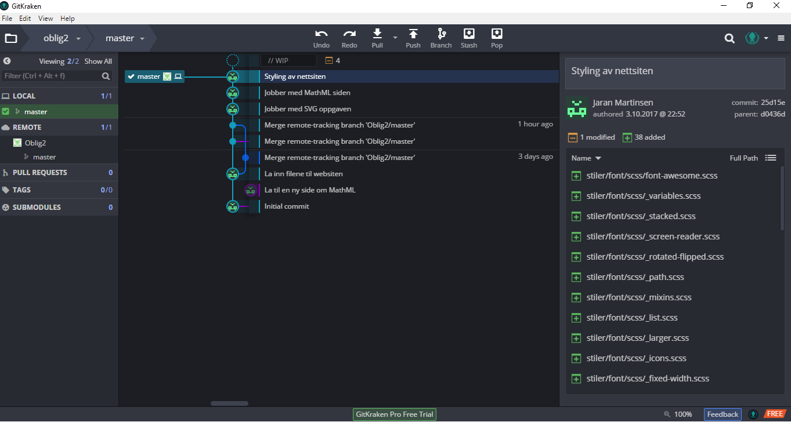

Git og GitHub
Git er et versjonskontrollsystem, som sørger for at man jobber med siste versjon av en fil/prosjekt. Dette blir brukt av team som jobber på samme prosjekt. Man kan laste ned 'pull' siste versjon fra nett, og laste opp filen du har jobbet med 'push'. Om fler har jobbet med samme fil samtidig, får blir man varslet og man kan finne ut hvordan filene skal flettes sammen til en. Det er i tillegg et backupsystem, som lagrer prosjektet i en sky, og man kan laste det ned og jobbe med det hvor man vil.
GitHub er et program som gjør Git enklere å bruke, det finnes til de fleste platformer. Det kan også brukes online. Jeg har valgt å bruke GitKraken som program for å holde orden på filversjonene mine. Til høyre ligger det et bilde av hvordan jeg har 'pushet' filene mine opp på GitHUB serveren. Jeg fant ut at dette var helt supert, da jeg endret alle html filene mine, pga nytt design, og Javascriptcoden til MathML forsvant - med GitKraken var det ingen problem å finne tilbake rett versjon av filen.